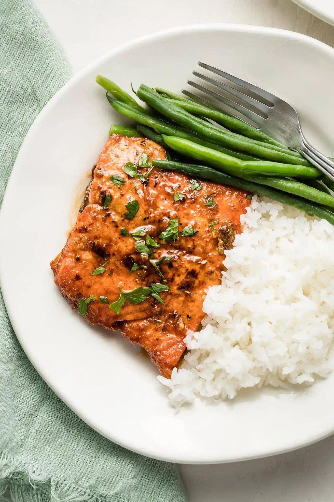

Honey Garlic Salmon
home

Description
Salmon with white rice and veggies.
Get your rice pot ready and honey drizzling for some honey garlic salmon.
Ingredients
- 250g of salmon
- 1 teaspoon of Italian herbs
- 1 tablespoon of honey syrup
- A pinch of salt and pepper
- A cup of rice
- A handful of veggies
Steps
- With the salmon seasoned, place into pre-heated oven at 200C for 21 minutes
- Boil the rice and veggies in two pots and stir well
- Season the salmon with honey syrup and serve